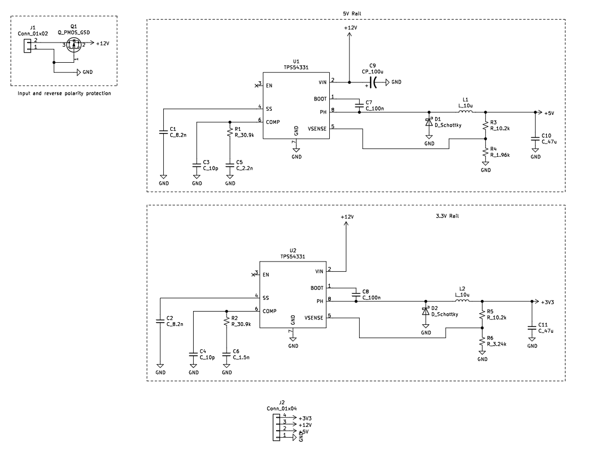

Actual image of power supply PCB

Board layout

Whole board schematic
For reverse polarity protection, a PMOS transistor is used for its low voltage drop and relative simplicity compared to other solutions. The gate is connected to ground, the source is connected to the output, and the drain is connected to the input. When the power supply is properly connected, the body diode allows a small amount of current through until the voltage on the output is high enough that the voltage between the gate and source is high enough for current to flow from the drain to the source. However, when the power supply is connected incorrectly, the gate is at a higher voltage than the drain and source, so no current flows through the MOSFET.
Both the 5V and 3.3V rails are buck converters, and in simulations achieved over 90% efficiency at a current draw of 3 amps.